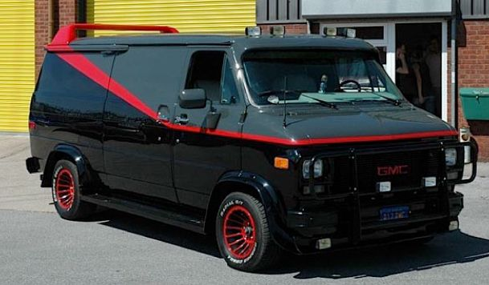

-
- Ecto 1
- SOS FANTÔME
- Cadillac Eldorado Biarritz
- 1959
-

- FAST & FURIOUS
- Dodge Charger R/T
- 1970
-
- BULLITT
- Ford Mustang Fastback
- 1967
-
- INTERCEPTOR
- MAD MAX
- Ford Falcon XB GT Coupé
- 1973
-
- James Bond
- Aston Martin DB5
- 1963
-
- Christine
- Plymouth Fury
- 1958
-
- Blues Brothers
- Dodge Monaco
- Modèle "police"
- 1974
-
- La DeLorean
- RETOUR VERS LE FUTUR
- DeLorean DMC 12
- 1975
-
- General Lee
- Shérif, fais moi peur
- Dodge Charger R/T
- 1969
-

- A-Team Van
- L'agence tous risque
- GMC Vendura 3500
- 1983
-
- Striped Tomato
- STARSKY ET HUTCH
- Ford Gran Torino
- 1975
-

- K.I.T.T.
- K2000
- Pontiac Firebird Trans Am
- 1982
-
- "La Ferrari"
- Deux flics à Miami
- Ferrari Daytona Spyder
- 1972